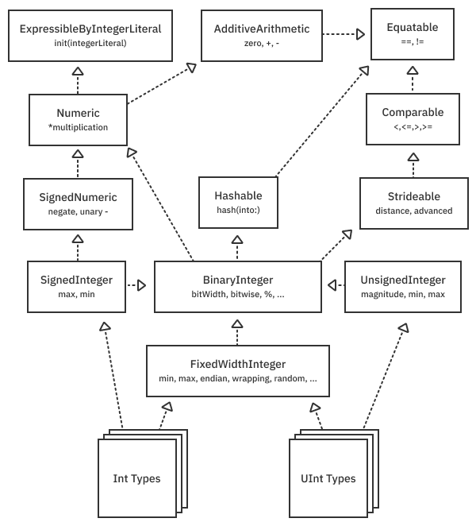
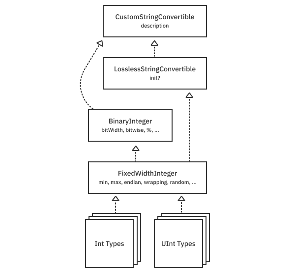
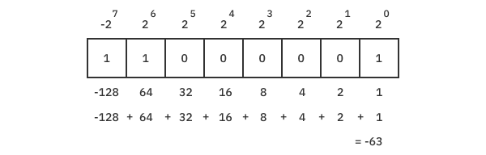
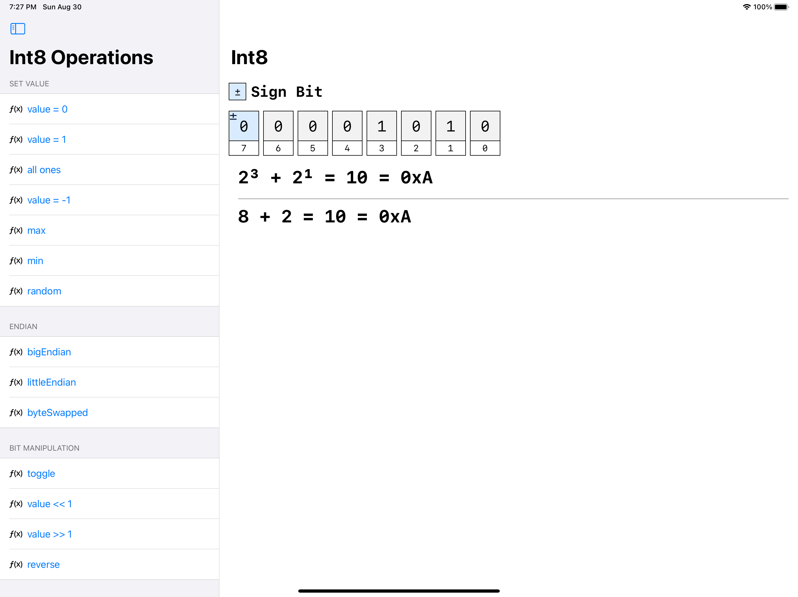
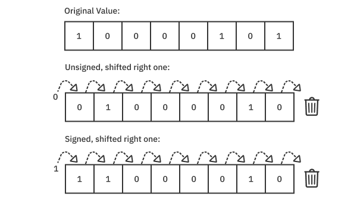
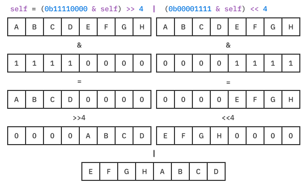
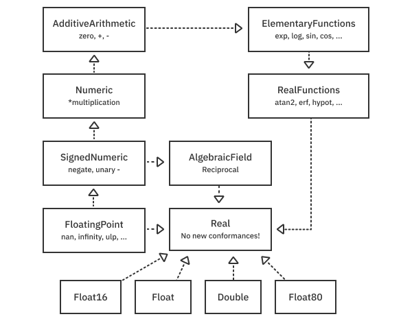
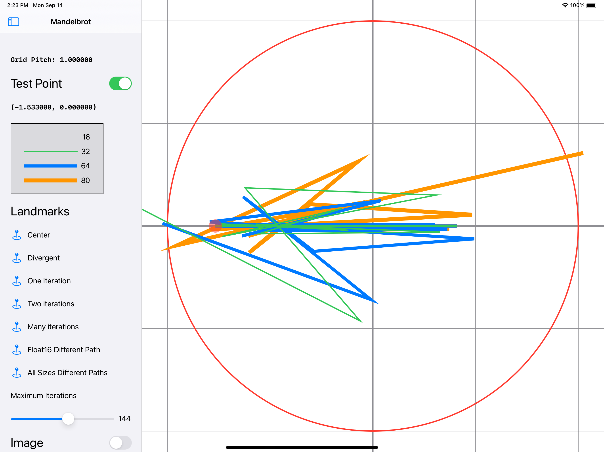
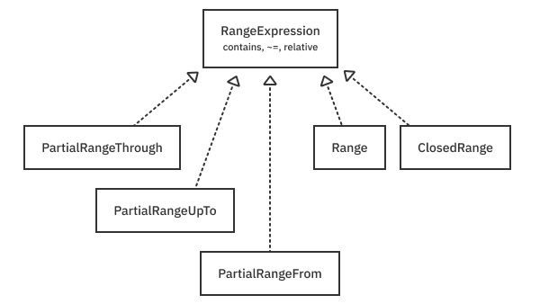

第5章：数字与区间¶
在本章中，你将完成两个iPad应用程序，研究整数和浮点数的属性。第一个应用程序是BitViewer，它可以让你看一下位级的表示和操作。第二个应用程序是Mandelbrot，它允许你测试苹果新的Swift数字包。该应用让你直观地看到不同浮点类型的精度。最后，你将使用一个操场来探索Swift如何实现范围和跨度。在这一章中，你将发挥你的通用编程能力，写出能与一系列类型一起工作的代码。
这一章可能感觉有点学术性，因为它涉及到数字的低级机器表示。这方面的一点知识会给你带来额外的信心和处理低层次问题的能力，如果它们出现的话。例如，如果你直接处理文件格式，或者发现自己在担心数字范围和准确性，这些话题就会很有用。Swift数值学也是一个很好的使用协议和泛型的案例，你在之前的章节中已经看过了。
代表数字¶
计算机是由开关晶体管组成的数字计算机器。考虑到基数为10的数字123.75。如果你把每个数字乘以一个适当的重量，你可以把它表示为1、2、3、7和5：

图中显示了数字是如何组成的。在这种情况下，radix是10，而位置决定了每个数字被乘以的重量。
计算机晶体管的作用就像高速开关，既可以打开也可以关闭。如果你只有两个状态（0和1）来表示一个数字，而不是10，会是什么样子？123.75将看起来像这样：

这里的基数是2。表示这个数字需要的二进制数字比十进制数字多得多。但是保存十进制数字在空间和计算方面的效率较低。它需要四个比特来存储一个10态十进制数字，这意味着你每存储一个数字都会浪费4-log2(10)或0.678比特。
第一个比特（在64位）有一个特殊的名字。它被称为最重要的位或MSB。这是因为它对整个数值有最重要的影响。最后一位（在0.25的位置）被称为最小有效位或LSB。它对整个数值的影响最小。
你可以看到，数字系统依赖于指数。如果你需要复习这些知识，你可以在可汗学院快速复习一下。https://bit.ly/3k0Tsin。
整数¶
第一台个人电脑一次只能处理一个字节--8位（数字从0到255）。你需要把这些小的数值变来变去才能产生更大的数值。多年来，计算机可以处理的信息大小反复翻倍--到16位、32位，现在最新的英特尔和苹果处理器上是64位。
Swift支持所有标准的整数大小，包括Int8、UInt8、Int16、UInt16、Int32、UInt32、Int64和UInt64。这些位宽是系统级编程所必需的，并且通常也有本地的、专门的硬件支持。
这里有一个表格，显示了每种类型和它所支持的数值范围：

在你的日常编程中，你会想使用Int，它在旧的32位硬件上是32位，在64位硬件上是64位。因为限制非常大，你很少需要担心溢出问题。它被视为不太可能，如果你碰巧超过了限制，Swift会停止你的程序。这个安全特性使一大类bug显而易见。但如果你使用的是不安全的语言，比如C语言，你的程序就会继续运行，产生出乎意料的结果，这可能是无情地难以调试的。
面向协议的整数¶
Swift的整数类型是基于struct的数值，包裹着LLVM的数字内置类型。因为它们是名义类型，所以它们可以定义属性和方法，并符合协议。这些协议是神奇的成分，让你轻松地以同样的方式处理整数类型，同时也利用每个类型的独特特征。例如，当Int128表示的Int最终出现时，这将是一个相对容易的过渡。整数的协议层次看起来是这样的：

Int和UInt类型分别采用了FixedWidthInteger协议以及SignedInteger和UnsignedInteger。这给他们提供了大量的共享功能，并编纂了他们的二补表示法，你很快就会了解到。
但还有更多。由于额外的协议和方法，整数可以无损地转换为String类型。
协议关系是这样的：

开始使用BitViewer¶
为了获得关于整数的实践经验，打开本章的projects/starter文件夹中的BitViewer项目。当你运行时，使用设备或模拟器，旋转到横向，点击左上方的显示侧边栏项目，你会看到这样一个屏幕：

选择一个数字类型。在本节中，重点是整数类型。你可以看到一个数字的二进制表示法，点一下比特就可以切换它们。水平滚动浏览所有的位，或者勾选复选框将它们垂直堆叠成字节。稍后，你将添加代码，对所有整数类型进行通用操作。
了解二进制补码¶
使用BitViewer，你可以探究一下这些位，看看数值是如何变化的。对于Int8，最不重要的位(LSB)是零位，而最重要的无符号位是六位。如果你把这两个位都打开，你会得到两个提高到6次方（64）加上两个提高到0次方（1），一共是65。
第七位很特别：它是符号位。你可能会猜想，翻转这个位子会使数值为-65。现在，所有的现代硬件都使用二的补码表示，符号位会加入最大的负值。在这种情况下，负2提高到7次方（-128），再加上65，结果就是-63。如图所示，它看起来像这样：

二进制补码的奇妙之处在于，每个比特模式都有一个唯一的值（只有一个0，而不是+0和-0）。此外，加法和减法使用相同的硬件电路，即减法只是一个负数的加法。这种节省硅空间的做法巩固了二进制补码在所有现代硬件中的代表性。
二进制补码中的否定法¶
单数-运算符和negate方法改变了一个整数的符号，但是比特会发生什么变化呢？要用二补法否定一个数字，需要切换所有的位并加一。例如，0b00000010(2)被否定后将是0b11111101+1=0b111110(-2)。现在自己用BitViewer中的几个数字试试吧。记住，当你加一的时候，你必须进行加法才能得到正确的答案。
Note
早期的计算机系统使用不同的策略来表示负数。例如，IBM 7090有一个符号位，只是将数字的符号翻转。PDP-1使用一补，通过翻转所有的位子来实现否定。这些系统的问题是，它们有两种零的表示方法。另外，加法和减法需要不同的硬件电路。二进制补码的出现解决了这些问题。
练习¶
- 虚构的
Int4和Int10类型的最小和最大可表示的值是什么? - 用
Int4表示-2的比特模式是什么? (把它加到2上，看是否得到0。) - 列出本章中所有
Int32支持的协议（上图）.
在本章的下载资料中找到练习的答案。
为BitViewer添加整数操作¶
是时候给BitViewer应用程序添加一些功能了。打开这个项目，花点时间熟悉一下高层次的代码。这里有一些需要注意的关键点。
Model/ModelStore.swift包含模型--每个整数和浮点类型的实例的列表。- 所有的数字都被分解成位，并由包含在
IntegerView或FloatingPointView中的BitsView显示。 - 每个比特都有一个语义类型，比如符号、指数或显着值，显示方式不同，在
Model/BitSemantic.swift中定义。 - 许多抽象都是通用的，所以它们适用于任何整数或浮点类型。
现在，打开Model/NumericOperation.swift，将此添加到文件中：
enum IntegerOperation<IntType: FixedWidthInteger> {
// 1
typealias Operation = (IntType) -> IntType
// 2
struct Section {
let title: String
let items: [Item]
}
// 3
struct Item {
let name: String
let operation: Operation
}
}
IntegerOperation是一个无人居住的类型（一个没有案例的enum），不能被实例化。它提供了一个命名空间和通用占位符IntType，符合FixedWidthInteger协议。如果你记得前面的整数协议层次，IntType具有Int和UInt类型的大部分功能。下面是该片段的一些其他重要部分。
Operation是一个函数，它接收一个IntType并返回一个由用户界面显示的修改后的IntType。Section有一个标题，让你对操作进行逻辑分组。Item是一个菜单选择，有一个显示名称和当选择时被调用的Operation。
接下来，定义一个静态属性menu来保存你以后要添加的操作的部分。
extension IntegerOperation {
static var menu: [Section] {
[
// Add sections below
]
}
}
这个菜单可以由SwiftUI界面呈现。要启用它，请打开Views/NumericOperationsView.swift，解开第40行左右的代码块：
// TODO: - Uncomment after implementing IntegerOperation.
// : etc
在这一点上，你可以构建并运行BitViewer。你还不会看到任何变化。但是，当你完成了下面所有的部分，它将看起来像这样：

设置值操作¶
回到Model/NumericOperation.swift中，在静态的menu属性中添加以下内容：
Section(title: "Set Value", items:
[
Item(name: "value = 0") { _ in 0 },
Item(name: "value = 1") { _ in 1 },
Item(name: "all ones") { _ in ~IntType.zero },
Item(name: "value = -1") { _ in -1 },
Item(name: "max") { _ in IntType.max },
Item(name: "min") { _ in IntType.min },
Item(name: "random") { _ in
IntType.random(in: IntType.min...IntType.max)
}
]), // To be continued
你可以再次构建并运行该应用程序。这些都是对IntType的通用方法，它被限制在FixedWidthInteger。所以你可以选择任何整数类型，并对其运行操作，看看位数如何变化。
第一节的操作依靠ExpressibleByIntegerLiteral来启动到0、1和-1。因为它定义了一个非失败的初始化器，如果数值超出了可表示的范围，它就会变成0。通过点选操作将一个无符号类型设置为-1，试试这个。
要设置为所有的1，使用AdditiveArithmetic中的.zero和BinaryInteger中的~补码运算符来翻转所有位。
FixedWidthInteger支持max、min和random。
Endian操作¶
术语endian指的是乔纳森-斯威夫特的《格列佛游记》中两种相互竞争的意识形态，它们在鸡蛋的小端还是大端上发生冲突。
在计算机数字表示中，endian描述的是最小或最大的字节出现在第一或最后。在小-endian中，最小的（最没有意义的）字节在前。

将此添加到菜单属性：
Section(title: "Endian", items:
[
Item(name: "bigEndian") { value in value.bigEndian },
Item(name: "littleEndian") { value in value.littleEndian },
Item(name: "byteSwapped") { value in value.byteSwapped }
]),
建立并运行。因为ARM和Intel的硬件都是小序数，所以点击littleEndian菜单选项不会有任何作用。点击bigEndian将交换字节。如果你运行在一个大-endian的机器上，则情况正好相反。无论你在什么平台上，byteSwapped访问器总是交换字节。
试用一些多字节类型，并确保它们按你的期望工作。
即使在像苹果这样的硬件生态系统中，所有东西都是小字节的，如果你试图解码PNG这样的文件格式，你会发现自己需要处理两种字节。Swift的整数类型使之变得简单。
位操纵操作¶
还是在IntegerOperation的menu中，添加一些位操作的操作：
Section(title: "Bit Manipulation", items:
[
Item(name: "toggle") { value in ~value },
Item(name: "value << 1") { value in value << 1 },
Item(name: "value >> 1") { value in value >> 1 },
Item(name: "reverse") { print("do later"); return $0 }
]),
构建和运行。
感谢BinaryInteger协议，Swift整数类型拥有所有翻转和屏蔽位的基本操作。你已经在Set Value部分看到了补数运算符~。这里，它被用来切换位。
运算符>>和<<可以分别向左和向右移动位。这里的一个关键概念是符号扩展。操作符>>对无符号和有符号类型的工作方式不同。如果类型是无符号的，>>将总是在最重要的位上插入一个0。但是如果它是有符号的，它将复制符号位。自己用一些数字试试吧。

目前，反转操作只是打印出"do later"。你将在稍后实现它，以逆转所有位的顺序。
算术操作¶
添加这些算术运算：
Section(title: "Arithmetic", items:
[
Item(name: "value + 1") { value in value &+ 1 },
Item(name: "value - 1") { value in value &- 1 },
Item(name: "value * 10") { value in value &* 10 },
Item(name: "value / 10") { value in value / 10 },
Item(name: "negate") { value in ~value &+ 1 }
])
虽然AdditiveArithmetic和Numeric协议给你提供了基本的加法、减法和乘法，但FixedWidthInteger引入了包络运算的概念。这些操作看起来像我们熟悉的运算符+，-和*，但有一个安培号&前缀。例如，UInt8.max + 1将停止你的程序，而UInt8.max &+ 1将把它包起来回到零。你想使用&+，这样你的程序就不会崩溃，而只是在用户增量超过最大值时绕回。
Note
你可能认为&+是快速操作。它们是的，但是它们也可能导致你的程序整体变慢。原因是，特别是当操作计算数组索引时，编译器不能再对内存安全进行推理。因此，额外的检查可能会出现在你的内循环中，导致大量的性能损失。
SignedInteger让你可以访问negate方法和单数-运算符。然而，由于IntType只受制于FixedWidthInteger协议，你需要手动操作。你可以通过翻转位子和加一来实现二进制补码，就像你之前看到的那样。在BitViewer中尝试你的自定义操作，看看它是否像魔术一样工作!
实现一个自定义的反向操作¶
为了发挥你的比特黑客精神，在FixedWidthInteger上做一个扩展，将所有的比特反转。要开始，在UInt8上实现一个私有扩展，在Model/NumericOperation.swift的顶部添加这个：
private extension UInt8 {
mutating func reverseBits() {
self = (0b11110000 & self) >> 4 | (0b00001111 & self) << 4
self = (0b11001100 & self) >> 2 | (0b00110011 & self) << 2
self = (0b10101010 & self) >> 1 | (0b01010101 & self) << 1
}
}
Note
当你进行信号处理或使用设备驱动程序等低级硬件时，像反转这样的位操作就会很方便。快速傅里叶变换（FFT）算法使用了著名的位反转操作，该算法具有广泛的应用。
这段代码使用了所谓的划分和征服的方法，它将一个大问题分解成子问题，直到子问题变得微不足道。
- 它使用了一个比特掩码和四舍五入来交换字节的
nibbles。 - 它交换了上半部分和下半部分的位子。
- 它交换每一个其他的位。
如果你把每个比特想象成ABCDEFGH，这里就是第一行倒转比特的工作原理：

颠倒上、下半位的笔画和其他每一位的操作方法都一样。
现在，在同一文件内，添加以下内容，使其适用于所有整数大小：
extension FixedWidthInteger {
var bitReversed: Self {
var reversed = byteSwapped
withUnsafeMutableBytes(of: &reversed) { buffer in
buffer.indices.forEach { buffer[$0].reverseBits() }
}
return reversed
}
}
你使用字节交换操作byteSwapped来翻转所有的字节，然后抓取一个原始缓冲区给它们。然后，你可以调用你的reverseBits()私有方法来改变每个单独的字节。
要把它挂在接口上，改变menu中反向项目的定义，使其变成：
Item(name: "reverse") { value in value.bitReversed }
改善bitReversed¶
上面的代码需要八个迭代来反转本地的64位类型。你能做得更好，并使用处理器的全部宽度吗？是的，你可以。
首先，注释掉（或重命名）当前的bitReversed定义，为新定义腾出空间。然后输入：
extension FixedWidthInteger {
var bitReversed: Self {
precondition(MemoryLayout<Self>.size <=
MemoryLayout<UInt64>.size)
var reversed = UInt64(truncatingIfNeeded: self.byteSwapped)
reversed = (reversed & 0xf0f0f0f0f0f0f0f0) >> 4 |
(reversed & 0x0f0f0f0f0f0f0f0f) << 4
reversed = (reversed & 0xcccccccccccccccc) >> 2 |
(reversed & 0x3333333333333333) << 2
reversed = (reversed & 0xaaaaaaaaaaaaaaaa) >> 1 |
(reversed & 0x5555555555555555) << 1
return Self(truncatingIfNeeded: reversed)
}
}
使用无符号类型是很关键的，以防止你在移位时出现符号扩展。一个看起来很神秘的数字，如0xf0....，只是你的第一个版本中的0b11110000...，以一种紧凑的格式拼出了8次。所有其他看起来很神秘的值也是如此。
最后，特殊的初始化器FixedWidthInteger.init(truncatingIfNeeded:)将小整数的宽度扩展到64位。在最后，它又把它们切掉。标准的整数初始化器如果不能转换数字就会被捕获。例如，UInt64(Int(-1))会停止你的程序，因为-1是不可表示的。truncatingIfNeeded只是把位数切掉而不出错。
Note
这个版本只支持最大的64位，否则会在运行时停止。你可以通过在words.reversed()上循环并使用本地大小UInt而不是明确的UInt64来支持更大（还不是标准）的格式。
有了这段代码，在BitViewer中测试一下，看看它在所有尺寸上的工作情况是否符合你的期望。
浮点式¶
浮点数可以表示小数点值。标准的浮点类型包括64位的Double，32位的Float和相对较新的16位Float16。有一个英特尔专用的Float80类型，可以追溯到PC有独立的数学协处理器芯片时。因为ARM不支持它，所以你只能在基于Intel的平台上遇到这种类型，例如Intel Mac或在Intel Mac上运行的iPad模拟器。
浮点协议¶
就像整数有一个层次的协议来统一其功能一样，浮点数也符合这样的协议：

其中一些协议，如SignedNumeric，是用于整数的相同协议。繁重的工作从FloatingPoint开始，它支持大部分的硬件原生的IEEE-754浮点标准。更多的功能是由BinaryFloatingPoint添加的, 它可以处理基数为2的特殊情况。
了解IEEE-754¶
一个64位的二进制整数可以从巨大的-9,223,372,036,854,775,808（Int64.min）到9,223,372,036,854,775,807（Int64.max）。但是一个64位的Double的范围可以达到深不可测的±1.8e+308（由Double.greatestFiniteMagnitude通过FloatingPoint协议报告）。此外, 同样的Double可以表示小到4.9e-324的数字(由Double.minimumNonzeroMagnitude报告). 这怎么可能呢？
答案是由IEEE-754标准定义的一种深思熟虑的表示法，它利用了可变精度的概念。它将接近零的数字保持得非常精细，而将巨大的数字变得更加厚重。
为了探索这一点，再次打开BitViewer并选择一个浮点类型。使用Float16是最舒服的，因为限制和大小都相对较小。使用Float16，最大的可表示的有限量级是65504.0，最小的非零量级是6e-08。

有三种位：一个符号位，五个指数位和10个显性位，共16个。该方程决定了有限数的值：
(-1 ^ sign) * significand * (radix ^ exponent)
这里有一些重要的观点：
^代表指数化。- 对于任何
BinaryFloatingPoint来说，基数是2。基数为2是一个非常有效的机器表示法，但不能准确表示一些常见的数字，如0.1。 - 符号将数字翻成正数或负数。任何被提升到
0次方的数字都被定义为1（正）。当上升到1次方时，该词就变成了负1（负）。与二进制补码不同，浮点0有两种表示方法。-0和+0。 significand是以下面描述的特定方式从原始的明显值位衍生出来的。FloatingPoint协议给了你可以在上述公式中使用的比特的熟化版本。exponent也是由比特衍生出来的，它的熟化值可以从FloatingPoint协议中获得。
棘手的魔法在于如何计算显数和指数。
显值位决定了实际的显值。为了以最少的位数获得最大的范围，IEEE-754假定有一个幻象，即领先的1位，尽管它没有存储在内存中。这被称为领先位惯例。这就是为什么显性位被设置为所有的0来代表数字1。如果你在上面的例子中打开第9位，它将增加0.5(2^-1)，并将总数值变为1.5。打开第8位，将增加0.25(2^-2)，变成1.75，以此类推。试试就知道了。
指数的计算同样微妙而巧妙，以最少的比特产生一个最大的范围。指数的计算是通过取一个偏置值和减去指数位的大小。由IEEE-754标准确定的偏置值是。
bias = 2 ^ (exponentBitCount -1) - 1
在Float16的情况下，它被评估为pow(2, Float16.exponentBitCount-1) - 1，即15。在上面的例子中，为了表示值1.0，指数位被设置为0b01111或15，这样偏置-15=0，因为这样，radix ^ 0=1。
在试验改变位时，你可能注意到某些位的模式是特例值，上面的计算规则被忽略了。例如，如果你把所有的指数位都打开，这个数字就会变成一个特殊的NaN，代表"不是一个数字"。
在BitViewer中添加浮点运算¶
为了进一步探索浮点数，在BitViewer中添加一些操作。同样，打开源文件Model/NumericOperation.swift，在底部添加这个：
enum FloatingPointOperation<FloatType: BinaryFloatingPoint> {
typealias Operation = (FloatType) -> FloatType
struct Section {
let title: String
let items: [Item]
}
struct Item {
let name: String
let operation: Operation
}
static var menu: [Section] {
[
// Add sections below
]
}
}
这段代码看起来应该很熟悉：这只是你对整数所做工作的浮点版本。通用的占位符FloatType被限制为BinaryFloatingPoint，这让你可以访问具体浮点类型的很多功能。
要在用户界面中启用这些操作，以便你可以进行实验，请到Views/NumericOperationsView.swift，取消对以下代码块的注释：
// TODO: - Uncomment after implementing FloatingPointOperation.
// : etc
这段代码在一个列表中显示每个操作，并在你点击它时调用它。
设置值操作¶
回到Model/NumericOperation.swift中，在浮点menu属性中添加这一部分。
Section(title: "Set Value", items:
[
Item(name: "value = 0") { _ in 0 },
Item(name: "value = 0.1") { _ in FloatType(0.1) },
Item(name: "value = 0.2") { _ in FloatType(0.2) },
Item(name: "value = 0.5") { _ in FloatType(0.5) },
Item(name: "value = 1") { _ in 1 },
Item(name: "value = -1") { _ in -1 },
Item(name: "value = pi") { _ in FloatType.pi },
Item(name: "value = 100") { _ in 100 }
]),
建立并运行。选择Float16类型。这一部分操作主要使用协议ExpressibleByIntegerLiteral和ExpressibleByFloatLiteral来设置值。
注意Attributes，它使用一组二进制计算属性来描述值。1.0的isFinite、isCanonical和isNormal被设置为true。isFinite意味着它使用你之前看到的公式来计算数值。isCanonical意味着该值是其典型的形式。
用不同方式表示的同一个值被称为cohort。使用expressible协议将确保你得到经典的表示方式。
试试其他的一些值。特别是，看看0.1。只有16位和2的基数，不可能精确地表示它。即使是64位的Double，你也不可能准确地得到它。它需要无限多的显性位来完成。
Note
如果你正在编写处理货币的应用程序，你可能希望使用一个可以精确表示0.1的数字类型，以避免会计错误。虽然IEEE-754规定了一个可以处理这个问题的radix 10类型，但它还没有在Swift中原生实现。然而，Swift提供了Decimal，这是Objective-C的NSDecimalNumber上的一个覆盖（包装类型）。
Subnormals¶
数值可以是normal或subnormal，或者在零的情况下都不是。一个正常的数字使用你在1.0中看到的前导位惯例。subnormal（也是denormal）假定前导位为零，支持真正的小数字。次正态数是通过保持所有指数位为零并设置一个显性位来创建的。试试就知道了!
Note
Subnormal数字是IEEE-754规范中一个有争议的部分。虽然在英特尔和较新的ARM设备上实现了，但它们并没有在所有版本的ARM（ARMv7和更早）上实现。因此，你会发现对这些数字的操作需要50-100倍的时间，因为一切都在软件中实现，而不是硬件。这些平台支持flush-to-zero控制寄存器，它只是使这些小数值为零。
设置特殊值的操作¶
在浮点menu属性中再增加一节：
Section(title: "Set Special Values", items:
[
Item(name: "infinity") { _ in
FloatType.infinity
},
Item(name: "NaN") { _ in
FloatType.nan
},
Item(name: "Signaling NaN") { _ in
FloatType.signalingNaN
},
Item(name: "greatestFiniteMagnitude") { _ in
FloatType.greatestFiniteMagnitude
},
Item(name: "leastNormalMagnitude") { _ in
FloatType.leastNormalMagnitude
},
Item(name: "leastNonzeroMagnitude") { _ in
FloatType.leastNonzeroMagnitude
},
Item(name: "ulpOfOne") { _ in
FloatType.ulpOfOne
}
]),
建立并运行，并选择Float16。
正如你已经看到的，浮点数可以代表整数所不能代表的特殊数值。本节操作对它们进行了设置，所以你可以看一下产生的位模式。
将所有指数位设置为1代表无穷大，你可以通过设置符号位使-无穷大。你可以将其与greatestFiniteMagnitude和leastNormalMagnitude进行比较。对于绝对最小的可表示数，你可以使用subnormal的leastNonzeroMagnitude。
不是一个数字有两种情况。如果你对它进行操作，一个信号的NaN可能会引起一个硬件陷阱。这种行为有利于在问题发生时立即停止，而不是在数百万或数十亿条指令之后停止。不幸的是，不是所有的硬件（包括ARM）都支持它，所以你不能依赖它。许多硬件平台会立即将一个发出信号的NaN转换成一个安静的NaN。
你可以通过将所有的指数位和最重要的显性位设置为1来制造一个安静的NaN。
通过设置其他重要位，你可以在发送NaN的同时发送一个错误代码。从理论上讲，这些额外的信息可以用来识别导致数值变成NaN的操作。但在实践中并没有这样做。
Note
拥有如此多的代表不同NaN代码的错误代码被认为是IEEE-754的一个重大弱点。科学计算领域的新兴标准避免了这一点，但截至本文撰写时，还没有硬件采用。请查看第三类Unum - Posit，了解浮点表示法的最新发展https://en.wikipedia.org/wiki/Unum_(number_format)。你可能会在未来的Apple Silicon版本中看到对此的支持吗？虽然它不在M1中，但Swift数字似乎在为这种类型的演进绘制路径。
步进和函数操作¶
最后两节探讨了浮点数字的ulp或最小精度单位。把它们添加到菜单中。
Section(title: "Stepping", items:
[
Item(name: ".nextUp") { $0.nextUp },
Item(name: ".nextDown") { $0.nextDown },
Item(name: ".ulp") { $0.ulp },
Item(name: "add 0.1") { $0 + 0.1 },
Item(name: "subtract 0.1") { $0 - 0.1 }
]),
Section(title: "Functions", items:
[
Item(name: ".squareRoot()") { $0.squareRoot() },
Item(name: "1/value") { 1/$0 }
])
建立并运行该应用程序。选择Float16。
许多人感到惊讶的是，浮点数的精度会因其数值的不同而改变。值越大，精度就越低。考虑一下下面的条件：
if value == value + 1 {
fatalError("Can this happen?")
}
如果value足够大，fatalError会发生。例如，如果value是1e19，增加一个并没有什么作用。
在Float16上，如果你选择greatestFiniteMagnitude，然后选择ulp，它将报告一个32的值。如果你从greatestFiniteMagnitude（65504）开始，然后按nextDown，你会得到65472，也就是32。越是大尺寸的浮点数值，它就越极端。
其他的步进方法可以让你对精度进行实验。例如，在一个Float16上从0开始，然后加0.1十几次。你会发现你已经偏离了0.01，这可能会导致会计人员发疯，晚上睡不着觉。尽管BinaryFloatingPoint类型对于整体范围和精度来说是很好的，但是它们不适合于像货币这样的东西，对于这些东西，你应该使用Decimal类型。Decimal可以精确表示0.1。
使用浮点的完全通用编程¶
通过BitViewer应用程序，你看到了如何使用BinaryFloatingPoint对浮点类型进行通用操作。这个协议很有用，但是缺少一些方法，比如处理对数、指数和三角函数的方法。如果你想要这些，你可以使用重载方法，调用操作系统的C函数。不过，调用这些函数不能以泛型方式进行。
Swift Evolution 0246: 通用数学函数（https://github.com/apple/swift-evolution/blob/master/proposals/0246-mathable.md），在2019年3月被Swift核心团队正式接受，解决了这个问题。不幸的是，由于 "与类型检查器性能和阴影规则有关的断源后果"，它还没有到语言本身。然而，你可以通过导入Numerics包来使用它。苹果公司认为这很重要，所以在WWDC20会议上进行了深入的介绍。
了解改进后的数字协议¶
Swift Numerics包最终将成为Swift本身的一部分，它为标准库增加了重要的协议，包括。AlgebraicField、ElementaryFunctions、RealFunctions和Real。它们与目前正在运行的协议是这样配合的：

请注意，这个改进的层次结构不再强调只有二进制浮点（radix-two-only BinaryFloatingPoint）的重要性。相反，它创建了一个新的空协议，叫做Real，它结合了所有有趣的协议，所以你可以像这样写通用的数字算法：
func compute<RealType: Real>(input: RealType) -> RealType {
// ...
}
RealType是一个通用占位符，它可以通过符合Real来访问所有需要的超越函数和代数运算。这使得在任何浮点类型之间相对轻松地切换变得微不足道。
Swift Numerics包还引入了一个Complex数字类型，由两个符合Real的浮点类型组成。它与C和C++中的复杂类型在布局上是兼容的，这使得它可以与流行的信号处理库一起使用。
现在你将通过实现著名的Mandelbrot集，获得一些使用数字包、Real协议和Complex数字类型的实践经验。(如果你从未听说过Mandelbrot集，请不要担心。你将会大饱眼福）。
Getting started with Mandelbrot¶
Open the Mandelbrot starter project and build and run the app. You’ll see that the Swift Numerics package is loaded and built as a dependency.
Xcode lets you easily browse the source of Swift packages in your project. Take a moment to explore the Numerics package, paying particular attention to files under swift-numerics/Sources/RealModule. There, you’ll see implementations for all the protocols diagrammed above.
The starter app is another SwiftUI app and looks like this in landscape orientation on an iPad:
开始使用Mandelbrot的时候¶
打开Mandelbrot的启动项目，构建并运行该应用程序。你会看到Swift Numerics包作为一个依赖项被加载和构建。
Xcode可以让您轻松浏览项目中的Swift包的源代码。花点时间探索Numerics包，特别注意swift-numerics/Source/RealModule下的文件。在那里，你会看到上述所有协议的实现。
初始应用是另一个SwiftUI应用，在iPad上横向看起来像这样：

你可以在中心点周围拖动，但目前它没有任何作用。
同样，你不会关注SwiftUI的具体细节，但你会看到如何通用地编写浮点代码。
对于这个应用，你将连续计算数百万个数值。启动项目将调试方案设置为释放模式，以使性能最大化。这个设置将使特定的循环执行速度提高一个数量级。如果你想启用更可靠的调试，使用Xcode方案编辑器改回调试构建。
什么是曼德布罗特集？¶
在数学中，集合是数学对象的一个集合。曼德布罗特集是一个复数的集合。听起来很复杂？不是的。复数只是二维的点，其中x坐标是一个普通的实数，而y坐标是一个虚数，其单位是i。关于i的非凡之处在于，当你为它平方时，它等于-1，这就把它转变成了X轴。
Note
一个复数是一个Swift结构，由两个值组成。这些实数和虚数部分是同一类型的浮点值。与普通数字一样，复数支持常见的运算，如和、差、积等。如果你对这里讨论的内容以外的细枝末节感兴趣，https://www.khanacademy.org 是学习复数的一个伟大资源。
要想知道一个数字是否包含在曼德布罗特集中，可以反复进行平方运算，它要么炸开（发散），要么不炸开。不发散的数值就在曼德布罗特集里。
大多数数字都会发散。例如，以数字5为例，开始对它进行平方。5，25，125，625，3125，15625，......它发散了，所以不在曼德尔布罗特集里。以数字0.1为例。它等于0.1, 0.01, 0.001, 0.0001, 0.00001。这个数字从来没有发散过，而且在集合中。你只需将这个想法扩展到有两个组成部分的复数。数学家们已经证明，如果一个复数离原点的距离超过半径为2，它将永远发散。你可以利用这个事实来确定一个数字是否在集合中，效果很好。
Note
因为集合是二进制的（要么在集合中，要么不在集合中），你可能会想知道为什么曼德布罗特集合图会出现迷幻的颜色，而不是只有黑色和白色。这些颜色来自于一个给定的点的发散速度。
转换为CGPoint或从CGPoint转换¶
SwiftUI和UIKit依赖Core Graphics进行渲染。你可以在界面上拖动的红点代表一个CGPoint，其x和y值由CGFloat组成。
你需要将CGPoint转换为具有实数和虚数部分的复数类型，然后再返回。启动项目定义了一个CGFloatConvertable协议，并为所有浮点类型实现了该协议，使之变得简单。你可以在CGFloatConvertable.swift中找到相关的实现。
Note
Float80只在Intel平台上可用，所以必须用#if arch(x86_64)来设置条件。只有当你在基于Intel的Mac上的iPad模拟器上运行时，你才能看到它。
添加一个测试点路径¶
让使用Real的通用编程开始吧! 实现该方法需要一个测试点(你可以拖动的点)，并计算随后的方块，直到maxIterations。要做到这一点，请打开MandelbrotMath.swift文件，找到points(start:maxIterations:)。
然后，用下面的方法替换这个函数：
static func points<RealType: Real>(start: Complex<RealType>,
maxIterations: Int)
-> [Complex<RealType>] {
// 1
var results: [Complex<RealType>] = []
results.reserveCapacity(maxIterations)
// 2
var z = Complex<RealType>.zero
for _ in 0..<maxIterations {
z = z * z + start
defer {
results.append(z) // 3
}
// 4
if z.lengthSquared > 4 {
break
}
}
return results
}
这个函数在任何符合Real的类型中都是通用的。它返回一个可以被Core Graphics绘制的点的列表。这些点是正方形 - maxIterations次数最多的start点。这里有一些关键的观察。
- 你不知道会返回多少个点，但你知道它不会超过
maxIterations。预先分配结果数组可以避免重复的、中间的分配。 - 循环使用
Complex类型是AlgebraicField的事实，它可以被平方和添加。它为你处理实数和虚数部分。 - 使用
defer块，你可以保证在循环的每个迭代中都有一个点被添加，即使通过break提前退出。 - 如果一个点超出了半径
-2，那么它就偏离了曼德布罗特集。为了避免计算昂贵的平方根，你可以使用lengthSquared和2^2（四）作为极限。
建立并运行该应用程序。现在你可以通过拖动点来探索曼德布罗特集的特定点。MandelbrotView用所有的浮点类型调用你的函数，并用不同的线条粗细渲染它们。在大多数情况下，它们会完美地排成一排，但有时却不是这样。
Explore the landmarks¶
The interface provides a set of named landmarks to try. Tap the landmark name, and the starting dot moves to a preset position.
探索地标¶
该界面提供了一组命名的地标来尝试。点击地标名称，起始点就会移动到一个预设的位置。
Divergent：这是在半径为2的圆圈之外，所以它立即停止。One iteration：这是对数字进行了一次平方，最后在圆圈外，共进行了一次迭代。Two iterations：这个数字被放大，落在圆圈内，然后再次被放大，最后落在圆圈外，共进行了两次迭代。Many iterations：这是在最大迭代的基础上反复对数字进行平方，并保持在圆圈内，所以它是在曼德布罗特集中。Float16不同的路径：对Float16来说是一个复杂的路径，是不同的。在大约25次迭代时（你可以用滑块控制），所有的不同类型都会出现分歧。- 所有尺寸不同的路径：这一点似乎是收敛的。但是在大约
100次迭代时，所有不同的浮点类型向不同的方向发展。Float16保持收敛，而其他32位、64位和80位的浮点则发散，各奔东西。

你可能会想，如果你测试复平面内每一个点，并根据发散到半径为2的圆外所需的迭代次数使用不同的颜色，会发生什么？这看起来会非常酷吗？是的，会的。你现在就去实现它。
实现曼德布罗特图像生成¶
是时候把你的浮点通用编程变成11了。你要做的就是你上面做的事情。但是你想知道的不是一个点的列表，而是跳出半径为2的圆所花的迭代次数。你可以使用同样的方法并调用.count，但是这样做效率太低了，因为你想以最快的速度对数百万个点做这个事情。
在MandelbrotMath命名空间中，添加以下静态函数：
@inlinable static
func iterations<RealType: Real>(start: Complex<RealType>,
max: Int) -> Int {
var z = Complex<RealType>.zero
var iteration = 0
while z.lengthSquared <= 4 && iteration < max {
z = z * z + start
iteration += 1
}
return iteration
}
@inlinable属性意味着你建议编译器在调用处注入这个函数的主体，所以你不需要支付函数调用的费用。
这个函数非常有效地计算了一个给定的start点所需的迭代次数，而不需要像之前的点函数对数组的分配那样需要任何堆的分配。
接下来，在MandelbrotMath.swift中找到这个方法：
static func makeImage<RealType: Real & CGFloatConvertable>(
for realType: RealType.Type,
imageSize: CGSize,
displayToModel: CGAffineTransform,
maxIterations: Int,
palette: PixelPalette
) -> CGImage? {
// TODO: implement (2)
nil
}
这个方法接受一个特定的RealType（例如：Float、Double、Float16），并计算出一个尺寸为 imageSize的整个图像，其中每个像素是一个测试点。
displayToModel是一个affine变换，指定如何从显示坐标（原点是左上角）到数学坐标，原点从视图中心开始，遵循right-hand-rule，Y轴向上。
palette是一个查找表，从特定点的迭代次数开始，映射到一个32位的红绿蓝阿尔法像素。
启动项目包含一个像素和位图的抽象，使图像的生成变得简单。这个抽象可以在Bitmap.swift中找到，并且是跨像素类型的通用抽象。
开始时，将上述函数替换为：
static func makeImage<RealType: Real & CGFloatConvertable>(
for realType: RealType.Type,
imageSize: CGSize,
displayToModel: CGAffineTransform,
maxIterations: Int,
palette: PixelPalette
) -> CGImage? {
let width = Int(imageSize.width)
let height = Int(imageSize.height)
let scale = displayToModel.a
let upperLeft = CGPoint.zero.applying(displayToModel)
// Continued below
return nil
}
这个函数截断了图像的宽度和高度，并将其作为一个整数存储在width和height中。
然后，它采取displayToModel转换，可以将显示的内容转换成数学模型点，并抓取存储在矩阵的a变量中的比例。这个操作是有效的，因为没有旋转或倾斜，而且x-scale和y-scale是相等的。
upperLeft获取显示点(0,0)并通过变换将其推至复数平面中的一个位置。
接下来，将return nil语句替换为以下内容：
let bitmap = Bitmap<ColorPixel>(width: width, height: height) {
width, height, buffer in
for y in 0 ..< height {
for x in 0 ..< width {
let position = Complex(
RealType(upperLeft.x + CGFloat(x) * scale),
RealType(upperLeft.y - CGFloat(y) * scale))
let iterations =
MandelbrotMath.iterations(start: position,
max: maxIterations)
buffer[x + y * width] =
palette.values[iterations % palette.values.count]
}
}
}
return bitmap.cgImage
这段代码使用Bitmap抽象来创建一个具有指定width和height的CGImage。一个CGPoint初始化了Complex类型作为起点。然后，它调用上面定义的内联的iterations函数来确定一个特定测试点的迭代次数。最后，它将一个从iterations中查找的颜色值插入到像素位置。cgImage访问器从这些像素中初始化一个图像。
有了这些代码，重新运行应用程序来详细探索曼德布罗特集。点击图像开关来显示图像。你可以平移和缩放图像，以揭示这个分形世界的无限复杂性。

无限的模式和复杂性。全部来自于对一个数字的平方。
精度和性能¶
Float Size控件可以让你选择调用哪个通用版本。在英特尔和iPad Pro（第三代）上，Double精度具有最好的性能。Float16在英特尔上表现不好，因为它是在软件中模拟的。令人惊讶的是，它在实际设备上的表现也不是很好--CGFloat和Float16之间的所有转换都会导致性能下降。
Float16在低变焦系数下渲染得很好，但你可以看到，当你放大时，它很快就会崩溃。你开始看到像这样的块状伪影：

Float80在现代英特尔机器上也是出奇的慢。这种较低的性能是由于在CPU的微代码中模拟了计算，并且由于在Core Graphics CGFloat大小之间的调集需要时间。
如果你用其他类型进行实验，你会发现所有的浮点类型都会出现同样的阻塞现象，你越是靠近就越是如此。类型的精度越高，你就可以在没有量化错误的情况下走得越深。
用SIMD提高性能¶
你能让渲染循环运行得更快，并且保持在纯Swift中吗？是的，你可以。
所有现代CPU都支持single-instruction-multiple-data（SIMD）计算。例如，处理器可以将一组16个数字与另一组16个数字分组，并一次性并行地执行所有16个加法，而不是一个一个地做16个加法。一个时钟刻度。这种性能需要对数据进行一些棘手的洗牌，在某些情况下，编译器会自动为你做这些工作。这种优化被称为auto-vectorization，是编译器研究的一个活跃领域。
为了帮助编译器，Swift为整数和浮点数字提供了SIMD类型。如果你使用SIMD类型对数字进行分组，编译器可以更可靠地进行自动矢量化。
Swift支持SIMD2、SIMD4、SIMD8、SIMD16、SIMD32、SIMD64类型。每一个都包含Scalar类型，是一个整数或浮点数。SIMD8据说包含8个标量lanes。
现在，使用SIMD8来加速曼德布罗特图像的计算，并行地进行八个测试点的计算。
再次，打开文件MandelbrotMath.swift，找到该函数：
static func makeImageSIMD8_Float64(
imageSize: CGSize,
displayToModel: CGAffineTransform,
maxIterations: Int,
palette: PixelPalette
) -> CGImage? {
// TODO: implement (3)
nil
}
替换为:
static func makeImageSIMD8_Float64(
imageSize: CGSize,
displayToModel: CGAffineTransform,
maxIterations: Int,
palette: PixelPalette
) -> CGImage? {
typealias SIMDX = SIMD8
typealias ScalarFloat = Float64
typealias ScalarInt = Int64
// Continued below
}
这段代码定义了一些类型别名，你可以用它来玩不同的大小。ScalarFloat和ScalarInt必须有相同的宽度（比特），因为这是现代硬件的要求。如果你不小心让它们的大小不同，程序就不会进行类型检查。
接下来，在方法中加入这段代码：
let width = Int(imageSize.width)
let height = Int(imageSize.height)
let scale = ScalarFloat(displayToModel.a)
let upperLeft = CGPoint.zero.applying(displayToModel)
let left = ScalarFloat(upperLeft.x)
let upper = ScalarFloat(upperLeft.y)
// Continued below
这段代码看起来与之前的非SIMD版本相似。但是因为你不能在SIMD类型中使用Complex，你需要在循环中明确地执行操作。
接下来，在方法中添加一些有用的常量：
let fours = SIMDX(repeating: ScalarFloat(4))
let twos = SIMDX(repeating: ScalarFloat(2))
let ones = SIMDX<ScalarInt>.one
let zeros = SIMDX<ScalarInt>.zero
// Continued below
这些常数出现在内循环中。每个都是8个通道的宽度（由SIMDX决定，它别名为SIMD8）。
现在，使用位图初始化器：
let bitmap = Bitmap<ColorPixel>(width: width, height: height) {
width, height, buffer in
// 1
let scalarCount = SIMDX<Int64>.scalarCount
// 2
var realZ: SIMDX<ScalarFloat>
var imaginaryZ: SIMDX<ScalarFloat>
var counts: SIMDX<ScalarInt>
// 3
let initialMask = fours .> fours // all false
var stopIncrementMask = initialMask
// 4
let ramp = SIMDX((0..<scalarCount).map {
left + ScalarFloat($0) * scale })
// 5
for y in 0 ..< height {
// Continue adding code here
}
}
return bitmap.cgImage
这段代码创建了位图并将其作为图像返回。下面是详细情况：
scalarCount被设置为8，因为SIMDX别名为SIMD8。realZ和imaginaryZ是八个通道的浮点数，用来记录这八个测试点的演变过程。counts是八个通道的每个测试点的迭代次数。initialMask和stopIncrementMask控制内循环中递增的counts。如果没有一个计数增加，循环将提前退出。在这里，你看到操作符.>。这个操作对每个车道独立进行>操作。ramp是用来确定下面有效的复数的实值起点的。y逐行循环，创建图像。
现在，将此加入到y行循环中：
let imaginary = SIMDX(repeating: upper - ScalarFloat(y) * scale)
for x in 0 ..< width / scalarCount {
let real = SIMDX(repeating: ScalarFloat(x * scalarCount) * scale) + ramp
realZ = .zero
imaginaryZ = .zero
counts = .zero
stopIncrementMask = initialMask
// Continue adding code here
}
// Process remainder
这段代码计算了用于整行像素的起始imaginary分量。然后，你以八块为单位处理每一个宽度的像素。答案累积为realZ和imaginaryZ，而迭代累积为counts。
接下来，继续添加这段代码：
// 1
for _ in 0..<maxIterations {
// 2
let realZ2 = realZ * realZ
let imaginaryZ2 = imaginaryZ * imaginaryZ
let realImaginaryTimesTwo = twos * realZ * imaginaryZ
realZ = realZ2 - imaginaryZ2 + real
imaginaryZ = realImaginaryTimesTwo + imaginary
// 3
let newMask = (realZ2 + imaginaryZ2) .>= fours
// 4
stopIncrementMask .|= newMask
// 5
let incrementer = ones.replacing(with: zeros,
where: stopIncrementMask)
if incrementer == SIMDX<ScalarInt>.zero {
break
}
// 6
counts &+= incrementer
}
// 7
let paletteSize = palette.values.count
for index in 0 ..< scalarCount {
buffer[x * scalarCount + index + y * width] =
palette.values[Int(counts[index]) % paletteSize]
}
该代码做了以下工作：
- 对于八个值，你计算到最大的迭代次数。
- 这是用来计算复数的平方的代数，拼出来的。回顾一下
(a+b)(a+b)=a^2+2ab+b^2。因为b是虚数，将其平方化就成了实数。之前Complex类型为你处理了这个问题，现在你要手动处理了。 - 你检查是否有任何测试点位于半径为
2的圆之外。如果是，则该车道的掩码为真。 - 你积累这个掩码，这样，如果没有一个车道在增加，循环就可以提前退出。
- 如果该车道已经停止递增，你就用
8个1的列表将它们替换为0。这种屏蔽是你避免做if/else计算的方式，它扼杀了并行性能。如果每个count都停止了增量（incrementer都是0），你就提前切出。 - 增量器，是八个
1和0的通道，累积到counts中。 - 最后，你需要在
palette中查找每个迭代计数的颜色，并将其写入内存。
在这一点上，算法已经完成。为了使它适用于任何宽度（不仅仅是8的倍数），你可以添加这段代码来处理剩余部分：
let remainder = width % scalarCount
let lastIndex = width / scalarCount * scalarCount
for index in (0 ..< remainder) {
let start = Complex(
left + ScalarFloat(lastIndex + index) * scale,
upper - ScalarFloat(y) * scale)
var z = Complex<ScalarFloat>.zero
var iteration = 0
while z.lengthSquared <= 4 && iteration < maxIterations {
z = z * z + start
iteration += 1
}
buffer[lastIndex + index + y * width] =
palette.values[iteration % palette.values.count]
}
上面的代码是非SIMD的算法。如果你的显示屏宽度不能被8整除，这段代码将处理几个剩余的像素。
你的SIMD实现现在已经完成了。你可以运行应用程序，现在使用8x64的浮点类型。对于较少的迭代，你不会看到太多的速度提升。然而，如果你把迭代次数提高到255次，你就会开始看到巨大的性能优势。例如，在最大迭代次数设置为255和高缩放系数的情况下，Float64需要750毫秒，而SIMD8<Float64>的实现是332毫秒。
极限在哪里？¶
SIMD工作得很好（尽管实现起来有点乱），因为它告诉编译器将工作并行化。然而，如果你走到一个极端，用32个64位的通道（SIMD32<Float64>），可能的结果是速度变慢。如果硬件不存在，编译器就不会有效地将东西矢量化。前面使用的类型别名使我们很容易探索这个空间，但我发现在我拥有的硬件上（英特尔模拟器，iPad Pro第三代）SIMD8<Float64>（如上）效果很好。
Note
为了比CPU提供的速度更快，你可以把渲染算法移植到GPU上。这涉及到将算法写成OpenGL或Metal的着色器。
范围¶
现在，把你的注意力转移到Swift数字类型的另一个重要方面--范围，你一直在使用它。早些时候，你看到整数和浮点类型符合Comparable协议。这种一致性对于支持对数字范围的操作至关重要。
就像数字类型本身一样，我们有理由猜测，范围是编译器中的一个概念。但是，和Swift的许多核心功能一样，它们只是不断扩展的标准库的一部分。
事实证明，Range是一个通用结构，有一个lower和upper的Bound类型，符合Comparable的规定。例如，在一个空的playground（或在启动文件夹中提供的playground）中，输入以下内容：
enum Number: Comparable {
case zero, one, two, three, four
}
有了这个简单的定义，就有可能形成一个范围：
let longForm =
Range<Number>(uncheckedBounds: (lower: .one, upper: .three))
...<运算符使它感觉像一个内置的语言功能，并且是等价的：
let shortForm = Number.one ..< .three
shortForm == longForm // true
范围的一个关键特性是它不包括上限。你可以通过运行这个看到这一点：
shortForm.contains(.zero) // false
shortForm.contains(.one) // true
shortForm.contains(.two) // true
shortForm.contains(.three) // false
如果你需要包括上界，还有一种叫做ClosedRange的范围类型。试试这个：
let longFormClosed =
ClosedRange<Number>(uncheckedBounds: (lower: .one, upper: .three))
let shortFormClosed = Number.one ... .three
longFormClosed == shortFormClosed // true
shortFormClosed.contains(.zero) // false
shortFormClosed.contains(.one) // true
shortFormClosed.contains(.two) // true
shortFormClosed.contains(.three) // true
当然，这些并不是所有的范围类型。你还可以使用前缀和后缀运算符创建部分范围。添加这个：
let r1 = ...Number.three // PartialRangeThrough<Number>
let r2 = ..<Number.three // PartialRangeUpTo<Number>
let r3 = Number.zero... // PartialRangeFrom<Number>
正如你所看到的，有许多方法来指定一个范围。
在一个范围内循环操作¶
你可能会想，是否可以在一个for循环中使用这些范围，例如：
for i in 1 ..< 3 {
print(i)
}
对于Number，不完全是。这种能力是以Strideable的一致性为条件的。你可能记得，Swift的数字类型都是Strideable。此外，Strideable相关类型Stride必须符合SignedInteger。
要看到这一点，让Number采用Strideable。首先，将定义覆盖成这样：
enum Number: Int, Comparable {
static func < (lhs: Number, rhs: Number) -> Bool {
lhs.rawValue < rhs.rawValue
}
case zero, one, two, three, four
}
接下来，添加一致性：
extension Number: Strideable {
public func distance(to other: Number) -> Int {
other.rawValue - rawValue
}
public func advanced(by n: Int) -> Number {
Number(rawValue: (rawValue + n) % 4)!
}
public typealias Stride = Int
}
重要的是，Stride类型被设置为Int，也就是SignedInteger。使用Int使你的Number类型成为CountableRange，这是一个由系统定义的类型别名：
typealias CountableRange<Bound> = Range<Bound>
where Bound: Strideable, Bound.Stride: SignedInteger
所以现在，你可以这样做：
for i in Number.one ..< .three {
print(i)
}
它将在调试控制台上打印一和二。
向后跨步和以非单位间隔跨步¶
范围总是要求下界和上界是有序的。如果你想向后数呢？
一个常见的方法是把范围当作一个集合，并使用reversed()算法，像这样：
for i in (Number.one ..< .three).reversed() {
print(i)
}
然而，当你符合Strideable时，即使你的类型不是CountableRange，你也可以使用标准库的stride函数。试试这个：
for i in stride(from: Number.two, to: .zero, by: -1) {
print(i)
}
for i in stride(from: Number.two, through: .one, by: -1) {
print(i)
}
你也可以在Mandelbrot应用程序中看到stride与CGFloat的使用。在GraphingView.swift文件中，水平线和垂直线的跨度被创建为GridLines形状的一部分，以呈现缩放图纸的效果。
范围表达式¶
如果你正在编写一个以范围为输入的函数，你可能会想知道应该使用这五种类型中的哪一种。一个好的选择是使用RangeExpression协议来符合所有的范围类型。用图表示，它看起来像这样：

你可以通过使你的函数跨范围类型抽象化来利用这个协议。例如，如果你这样写：
func find<R: RangeExpression>(value: R.Bound, in range: R)
-> Bool {
range.contains(value)
}
它让你使用任何形式的范围，像这样：
find(value: Number.one, in: Number.zero ... .two) // true
find(value: Number.one, in: ...Number.two) // true
find(value: Number.one, in: ..<Number.three) // true
与用户必须记住使用一个特定的范围操作符（如..<或...）相比，使函数通用化可以使你的API更加灵活。现在，它们都可以使用。
关键点¶
你已经看到了Swift是如何使用协议和泛型从头开始构建数字类型和范围的。下面是一些需要注意的关键点。
Swift通过协议的组合来描述整数类型。- 当你沿着协议层次往下走到
FixedWidthInteger时，你会得到越来越多的功能，可以通用地使用。 - 整数是用二进制的补码表示的。
- 要否定一个二进制的数字，你要翻转位子并加上
1。 - 有符号的整数在右移时，会对一个值进行符号扩展。无符号整数则不然。
- 如果你的程序溢出，
Swift会捕获你的程序。但你可以通过使用以&开头的运算符或特殊的截断初始化器来关闭这一安全功能。 Endian指的是内存中字节的排序。Little-endian是现代苹果平台上最常见的。Swift支持IEEE-754二进制浮点类型并使用协议来描述它们。- 浮点数可以是有限的、无限的和纳米的。
- 符合
BinaryFloatingPoint的类型有一个2的基数。 - 如果你正在处理货币，可以考虑使用
Decimal类型，它使用一个等于10的基数。 - 一些浮点类型和功能不被硬件支持。(英特尔处理器模拟
Float16。Float80在ARM上不被支持）。 Swift Numerics包还没有被并入标准库。然而，它允许使用Real协议进行完全的通用编程。Swift Numerics提供了一个Complex数字类型。SIMD类型让你对数据进行分组，以便编译器能够对它们进行矢量处理。使用SIMD可以显著提高速度，但也增加了复杂性。Swift标准库中定义了多种多样的范围类型。RangeExpression可以用来统一不同的范围类型。
接下来去哪里？¶
尽管你在这一章中已经涵盖了很多内容，但它只是触及了数字学的表面。你可以通过阅读维基百科上的文章来探索IEEE-754的一些角落。
https://en.wikipedia.org/wiki/IEEE_754
Swift Numerics包是Swift中更令人兴奋的最新发展之一。它将带来许多强大的功能，如近似相等、额外的数字类型、广义张量等等。最新的信息，请到论坛上查看。
https://forums.swift.org/c/related-projects/swift-numerics/56
最后，你还看了通用范围，它可以作为序列或集合使用，或对现有集合进行切分。你将在下一章中探索这些类型的细节。